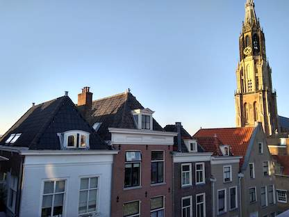

Displaying results for query ?

Delft
City in The Netherlands
Delft, a canal-ringed city in the western Netherlands, is known as the manufacturing base for Delftware, hand-painted blue-and-white pottery. In its old town, the medieval Oude Kerk is the burial site of native son and Dutch Master painter Johannes Vermeer. Once the seat of the royal House of Orange, the 15th-century Nieuwe Kerk houses the family's tombs and overlooks Delft's lively market square.
Area
24.06 sq km
City Hall
Delft City Hall
Province
South Holland